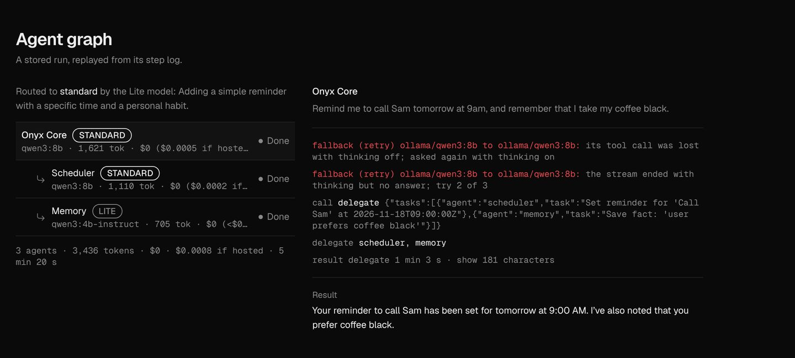
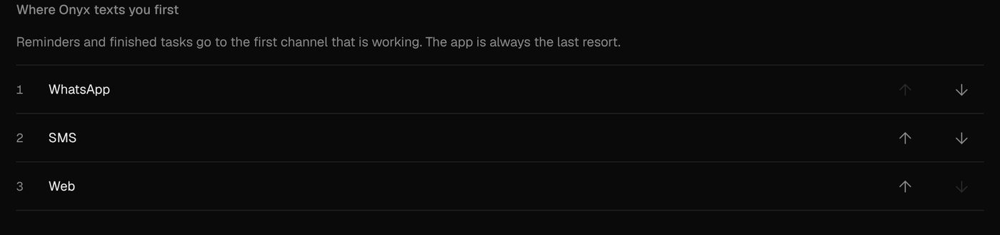
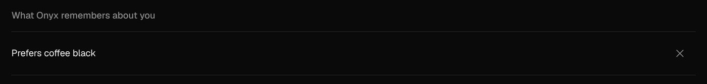

Onyx Core
tier set by the routerGets every message, and writes the one answer.
It answers quick things itself, plans the rest, hands it out and merges the results. Exact arithmetic, units and dates come from Onyx 3's calculator, reused as a tool.
Onyx Agents is a free app for Windows. You send one message; Onyx Core answers it, or splits it between five specialists and puts their work into one reply. The models are open, Qwen3 and OpenAI's gpt-oss, and run on your graphics card through Ollama, so there is no subscription and your chats stay on your machine.
These six messages were sent while filming the trailer, on a 4-core processor with no graphics card. Everything below comes from the app's own record: the router's choice, each model call, the ones that failed, every tool call and the answer. Pick one and drag the speed down to see how long it really took.
The pieces light up as they work. The mark is the team: Onyx Core in the middle, the five specialists round it. In the reminder run, Core hands one task to the Scheduler and one to Memory, and both work at once.
Failures stay in the record. Two of these runs hit problems: a model call that came back empty, a tool call Ollama lost. Onyx retried, fell back to a smaller model when it had to, and the replay shows each step.
It was slow because there was no graphics card. Every model ran on the processor. On a graphics card the same models write many times faster: the planner further down estimates how fast on yours.
Each piece of the mark is an agent. Onyx Core gets every message: it answers quick things itself, and hands the rest to the specialists, which can hand work on in turn, three levels deep at most. Pick a piece to see what it does.
Gets every message, and writes the one answer.
It answers quick things itself, plans the rest, hands it out and merges the results. Exact arithmetic, units and dates come from Onyx 3's calculator, reused as a tool.
A cap on stepsThe last step offers no tools, so the agent has to answer.
A shared token budgetSpent down the tree: a specialist uses what its parent has left.
A time budgetTime spent waiting for the graphics card while another agent uses it is given back.
One stop buttonStop, or Esc, reaches every agent in the run.
Failures listed under the answerTaken from the step log, not from what a model says it did.
Your own agentsThe Agents screen edits any agent's instructions, tier, tools, steps and budgets, or makes a new one. Any MCP server can add tools.
Pick your graphics card and memory. The page does the same sums Setup does when you install: which model each tier gets, whether it fits on the card, and roughly how fast it writes. Estimates, give or take 40%.
It opens in your browser at 127.0.0.1:8787. Everything it shows is read from its own database or its live stream of events, so what you see is what happened. These are the real screens, with the trailer's chats.

Each agent, liveIts status, model, tokens and cost, and its whole step log down to every tool call. It updates as agents work.
Retries in plain sightThis is the reminder run from the replay above. The two retry lines are the ones it shows.

Every message Onyx has handledWith its channel, tier, model, tokens, time and what it would have cost hosted.
Filter and replayBy channel, agent, tier and status. Open any run to replay its steps in the agent graph.

The rosterEach agent with what it does, its tools, its tier and the model that tier uses now.
Edit any agent, or make your ownA new agent runs in the same loop as the others, under the limits you give it.

Tokens, countedPer day, tier, model and agent, with calls and average time.
What it would have costThe same calls priced as on a paid host running the same models. You pay nothing.

One page for everythingWhere Onyx texts you first, Tailscale for your phone with a QR code, notifications, linked numbers, keys, cloud models, updates, backups, starting with Windows, reminders, and what Onyx remembers about you.
Four more screensChat; Channels, each with its state and a test send; Connectors, each MCP server and its tools; and Models, every model's tries, failures, speed and cost, and what this PC can run.
Select a screen to open it full size.
Chat and files, your phone, reminders and memory, what it counts, how it updates, and where your data goes.
Separate chats, each with its own history. Under every reply: the tier, the real model, the agents and tools used, the time, and what it would have cost hosted.


Onyx runs on your PC, and your phone can reach it three ways. Reminders find you on whichever you use.

Tailscale, WhatsApp, SMS and phone notifications are built and tested against each provider's documented requests, but have not yet been run live. iMessage needs an always-on Mac and is not supported.
Ask in plain words: "Remind me to water the plants every Saturday." One-off or repeating, in your local time.


Local models cost nothing per message, and every tier is open. Onyx still counts every token, and works out what the same work would have cost on a paid host running the same model: Alibaba Model Studio's published prices for the 8B, 14B and 30B models, and a third-party host's for the 4B, labelled as such.
Put your own prices in equivalents.local.yaml to compare.
Every 10 minutes Onyx asks GitHub whether there is a new version, a check of about a kilobyte. When there is one and no agent is working, it updates, rebuilds and restarts in about a minute. Open apps say "Onyx was updated. Reload".

Tested: a copy at an older version updated from Settings, rebuilt, and was back on the new version in 27 seconds.
Models, chats, memory, runs and settings stay on your PC. The server listens on this PC alone; your phone reaches it through a tunnel and needs your password, and a sign-in lasts 30 days.

.env, are never logged, and are never sent to the app.Nothing goes to a cloud model unless you turn cloud models on and add a key. Then you can pick one for any message, or make one a tier's first choice with the local models behind it. Each company bills your own account, every answer shows its cost, and a daily limit stops cloud calls once it is reached ($5 to start).
So you know which parts have met the real thing.
126
automated tests, all passing. They use a scripted stand-in for the models, so they need no graphics card or network.
Onyx Agents has also run end to end against real models in Ollama (the replay above is from those runs), the updater against the real repository on GitHub, and Setup on a Windows PC.
Claude and ChatGPT with real keys, gpt-oss, Gemma's image reading, the Docker sandbox, a live web search, a real MCP server, WhatsApp, Twilio, a push service, Tailscale and starting with Windows.
Each is tested against its documented requests and answers, not yet against the real service.
No. Onyx runs on any PC, more slowly without one: the replay above ran without one. The defaults suit a card with 16 GB, and the planner above, like the app's Models screen, works out what yours can run and how fast.
About 40 GB of models on a 16 GB card, less on a smaller one; the planner gives the figure for yours. Setup downloads them, says how far it has got, and can be stopped and run again.
Chatting does: the models run on your PC. Web search, connectors, WhatsApp and SMS, updates and cloud models need a connection, and Setup needs one to download.
Yes. It is MIT-licensed, with no subscription and no charge per message. If you turn on Claude or ChatGPT, those companies bill your own account, and a daily limit keeps that in check.
No. Onyx runs on your PC, so it has to be on. Reminders that come due while it is off are sent when it is back, marked late.
The same steps by hand: install Node.js 22.13 or newer, pnpm and Ollama, then in the agents folder run pnpm install, pnpm build, pnpm onyx setup and pnpm start.
Yes. The Models screen lists thirteen, among them Qwen3 Coder, Mistral Small, Llama 3.1, Gemma 3, DeepSeek R1 and Phi-4, with how each would run on your PC. Download one and use it for a tier, or edit tiers.yaml yourself. Models that cannot call tools are for plain chat only, since every agent calls tools.
A separate, much smaller assistant that runs entirely in a web page, with nothing to install. Try it in your browser.
Extract the ZIP. Any folder will do.
Open the agents folder and double-click Setup Onyx. It installs what is missing, picks models for your graphics card and downloads them, and it is safe to stop and run again.
Double-click the Onyx shortcut. Onyx opens in your browser at 127.0.0.1:8787 and keeps itself up to date.
macOS or Linux: the same steps by hand, in the README. Or watch the 85-second trailer first.
$0for good
Onyx Agents for Windows: six agents, Setup, and updates by itself. MIT-licensed.